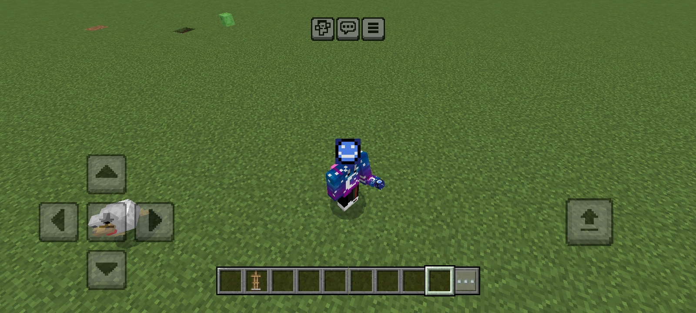
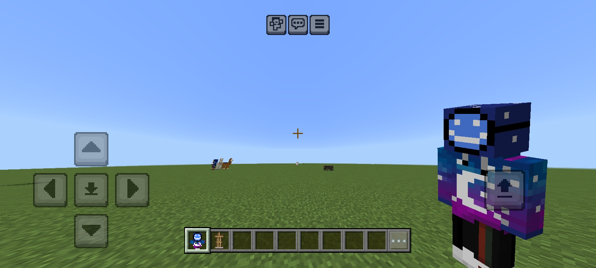
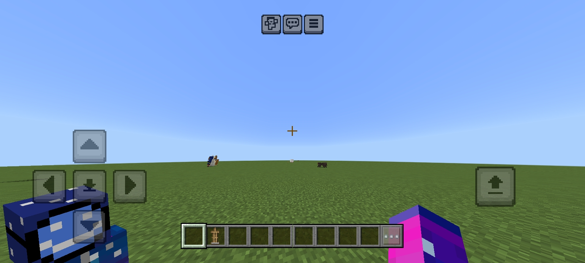
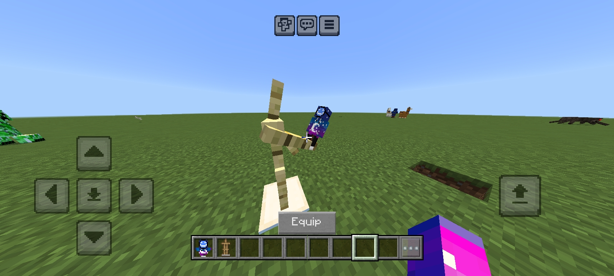
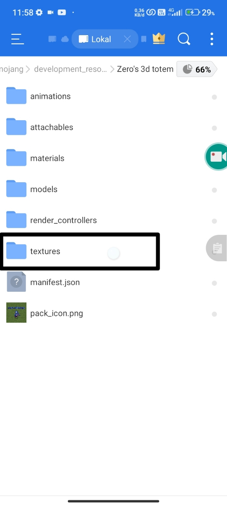
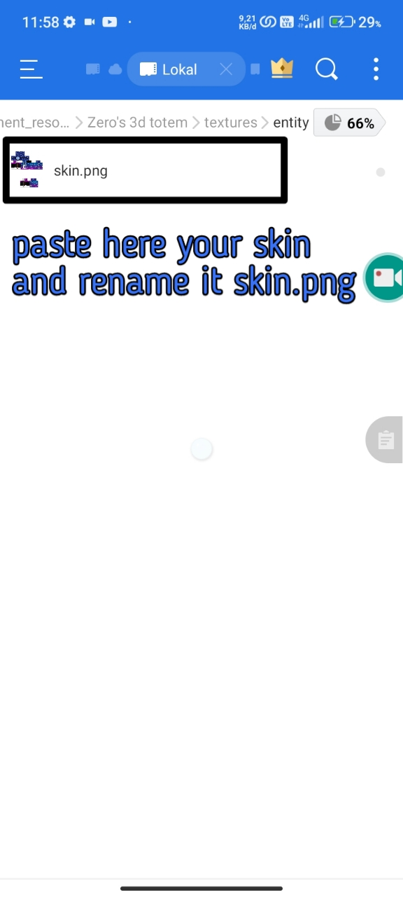
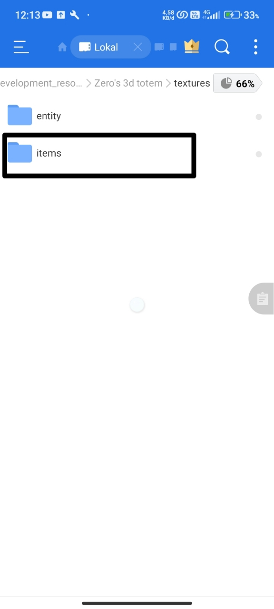
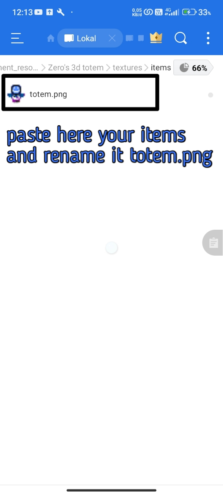

zero's 3d totem
Are you bored with the totem texture that is just like that? Then you see Java Player using 3D totem and then you also want to use it?, I got you!
right hand fpp

offhand fpp

armor stand perspectives
HOW TO PUT YOUR SKIN INTO THIS PACK;
-FIRST, EXTRACT THE FILE,AND OPEN THE FILE, AND GO TO TEXTURES FOLDER

-SECOND, OPEN ENTITY FOLDER
THIRD, PASTE YOUR TEXTURE HERE, AND RENAME IT "skin.png"
IF YOU WANT TO ADD CUSTOM ITEM TEXTURE, JUST CLICK LINK BELOW AND PUT YOUR ITEM TEXTURE IN "items" FOLDER   skin to totem item maker Download zero's 3d totem